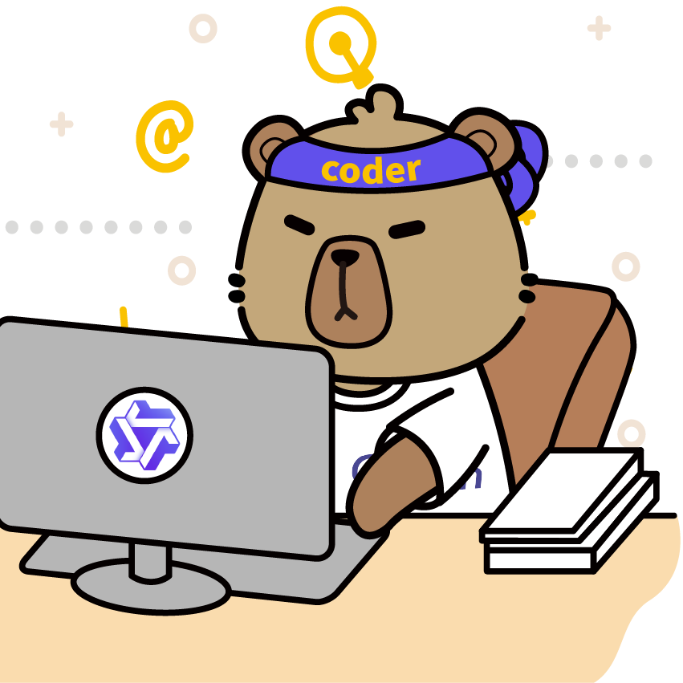

JL
Jensen Loke
CEO · Product builder · Community organiser
I design products, workflows and teams that make complex services work better.

This is not local versus cloud. It is choosing the right operating mode for the work.
Run local. Build together. Evaluate what matters.
 Connect with Jensenlinkedin.com/in/jensenloke
Connect with Jensenlinkedin.com/in/jensenloke
